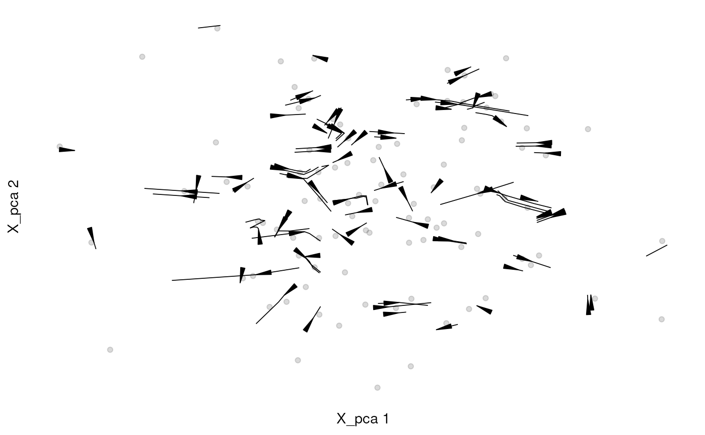
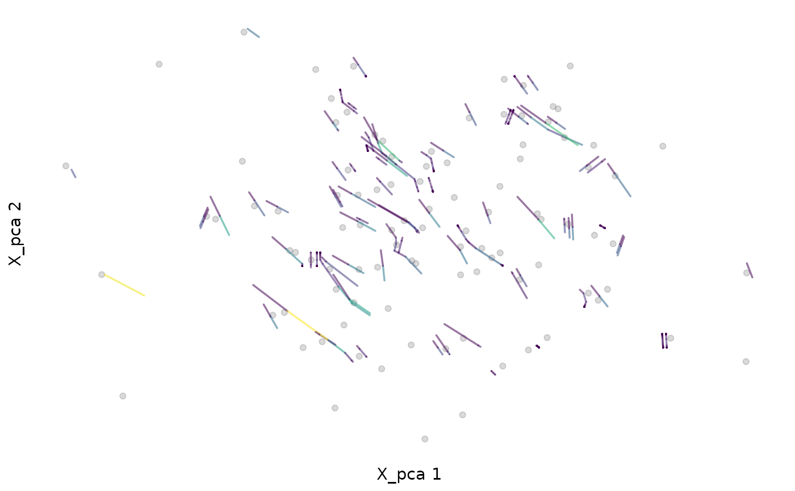

Plot velocities embedded into low-dimensional space as a stream plot. Stream lines are lines that follow the gradient in the velocity field and illustrate paths that cells could follow based on observed RNA velocities.
plotVelocityStream( sce, embedded, use.dimred = 1, color_by = "#444444", color.alpha = 0.2, grid.resolution = 60, scale = TRUE, stream.L = 10, stream.min.L = 0, stream.res = 4, stream.width = 8, color.streamlines = FALSE, color.streamlines.map = c("#440154", "#482576", "#414487", "#35608D", "#2A788E", "#21908C", "#22A884", "#43BF71", "#7AD151", "#BBDF27", "#FDE725"), arrow.angle = 8, arrow.length = 0.8 )
| sce | A SingleCellExperiment object containing
low-dimensional coordinates, e.g., after t-SNE, in its
|
|---|---|
| embedded | A low-dimensional projection of the velocity vectors into the
embedding of |
| use.dimred | String or integer scalar specifying the reduced dimensions
to retrieve from |
| color_by | A character scalar specifying a column in |
| color.alpha | An integer scalar giving the transparency of colored cells. Possible values are between 0 (fully transparent) and 1.0 (opaque). |
| grid.resolution | Integer scalar specifying the resolution of the grid, in terms of the number of grid intervals along each axis. |
| scale | Logical scalar indicating whether the averaged vectors should be scaled by the grid resolution. |
| stream.L | Integer scalar giving the typical length of a streamline low-dimensional space units. |
| stream.min.L | A numeric scalar with the minimum length of segments to be shown. |
| stream.res | Numeric scalar specifying the resolution of estimated streamlines (higher numbers increase smoothness of lines but also the time for computation). |
| stream.width | A numeric scalar controlling the width of streamlines. |
| color.streamlines | Logical scalar. If |
| color.streamlines.map | A character vector specifying the
color range used for mapping local velocities to streamline colors. The
default is |
| arrow.angle, arrow.length | Numeric scalars giving the |
A ggplot2 object with the streamline plot.
grid.resolution and scale are passed to
gridVectors, which is used to summarized the velocity vectors
into an initial grid. A full regular grid is computed from that and used
in geom_streamline to calculate streamlines. The
following arguments are passed to the arguments given in parenthesis of
geom_streamline:
stream.L (L), stream.res (res),
stream.min.L (min.L), arrow.angle (arrow.angle)
and arrow.length (arrow.length).
Streamlines are computed by simple integration with a forward Euler method,
and stream.L and stream.res are used to compute the number of
steps and the time interval between steps for the integration.
stream.width is multiplied with ..step.. estimated by
geom_streamline to control the width of streamlines.
gridVectors used to summarize velocity vectors into
a grid (velocity field), the ggplot2 package used for plotting,
geom_streamline in package metR used to
calculate and add streamlines from the RNA velocity field to the plot,
viridis for creation of color palettes.
Michael Stadler
library(scuttle) set.seed(42) sce1 <- mockSCE(ncells = 100, ngenes = 500) sce2 <- mockSCE(ncells = 100, ngenes = 500) datlist <- list(X=counts(sce1), spliced=counts(sce1), unspliced=counts(sce2)) out <- scvelo(datlist, mode = "dynamical") em <- embedVelocity(reducedDim(out, 1), out)[,1:2]#>plotVelocityStream(out, em)plotVelocityStream(out, em, color.streamlines = TRUE)